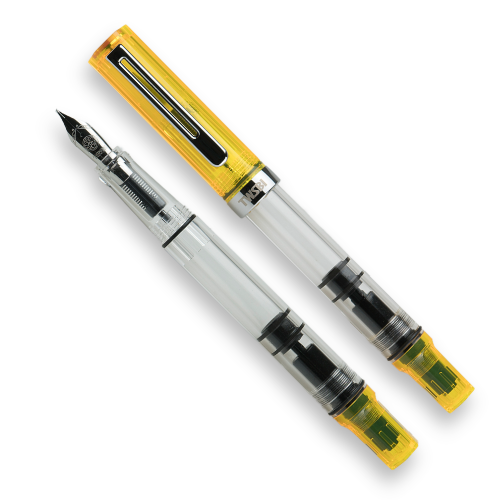
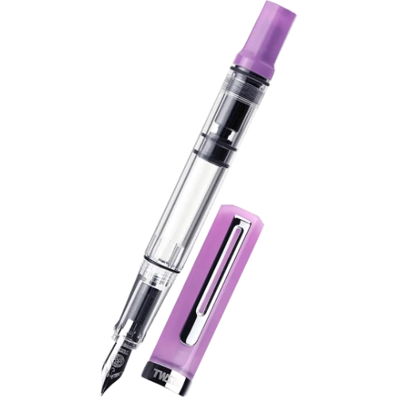
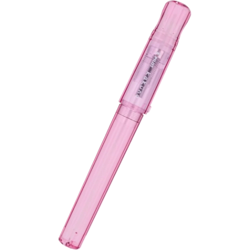

Maria's Fountain Pen Collection

TWSBI Eco Transparent Yellow
This was the first fancy-ish pen that I bought

TWSBI Eco Glow Purple
My first pen with a stub nib!
Pilot Kakuno Transparent Blue
My first Pilot Kakuno. It is from the family series and I selected a fine nib

Pilot Kakuno Transparent Pink
Loved the blue one so I got another pen from the family series in pink with a medium nib.